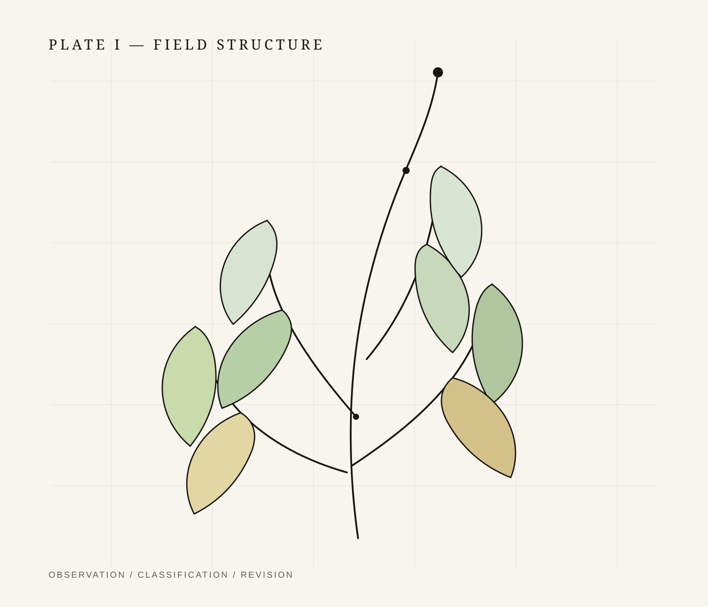
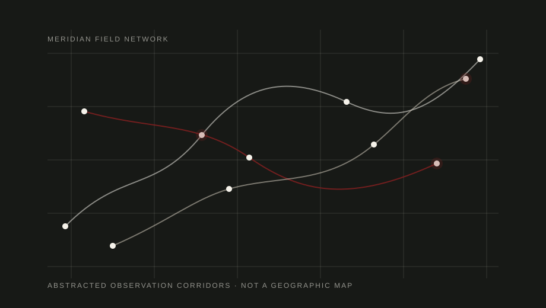
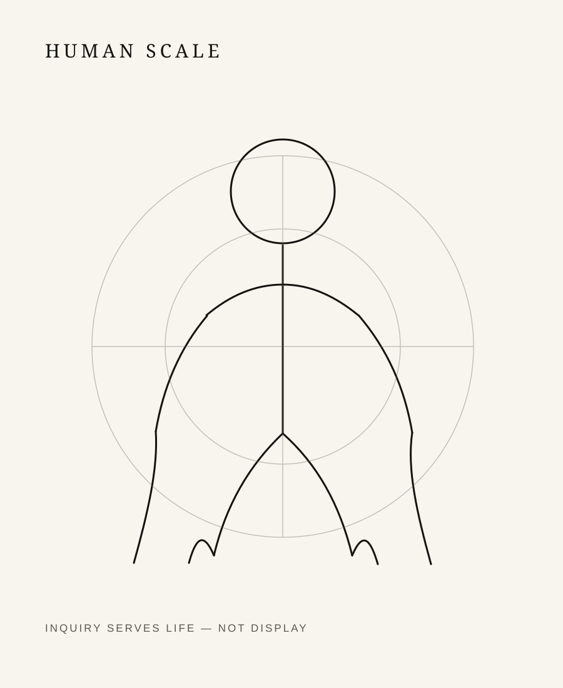

01 / Papers
Formal documents
Long-form arguments, proofs, models, experiments, and structured research manuscripts.
Independent work registry
This page is designed as a calm, durable public catalogue for papers, theorems, discoveries, inventions, essays, technical notes, and news. It is intentionally human: precise enough for scholarship, warm enough for long reading, and quiet enough to let the work carry the page.
Principle
“A good research page should not perform intelligence. It should preserve it: cleanly, legibly, and with enough space for a reader to think.”
The system below treats every work as a record: a title, a kind, a status, a date, a short abstract, and eventually supporting files. Until the first real entry exists, the interface remains empty on purpose.
Catalogue
A publication-quality index for formal papers, informal writings, mathematical objects, inventions, discoveries, announcements, and future primary documents.

No records published yet
data/records.js.Keep the first additions severe and simple: one title, one date, one kind, one abstract, and one link. The page will become richer as the work becomes real.
Fields
01 / Papers
Long-form arguments, proofs, models, experiments, and structured research manuscripts.
02 / Theorems
Precise statements, assumptions, proofs, corollaries, limitations, and revision history.
03 / Discoveries
Findings that deserve preservation before they become papers, products, or systems.
04 / Inventions
Devices, methods, protocols, software, mechanisms, and implementation records.
05 / Writings
Clear prose, field notes, arguments, criticism, letters, and philosophical fragments.
06 / News
Announcements, releases, corrections, additions, milestones, and open calls.
Structure
The design treats research as a path through landscape: observe, model, prove, apply. The visual system uses paper, ink, terrain, plants, and human scale instead of chrome, neon, or decorative motion.


Method
Updates
When entries are added or revised, this area can become the public changelog.
The first published record will automatically give this section a reason to exist.